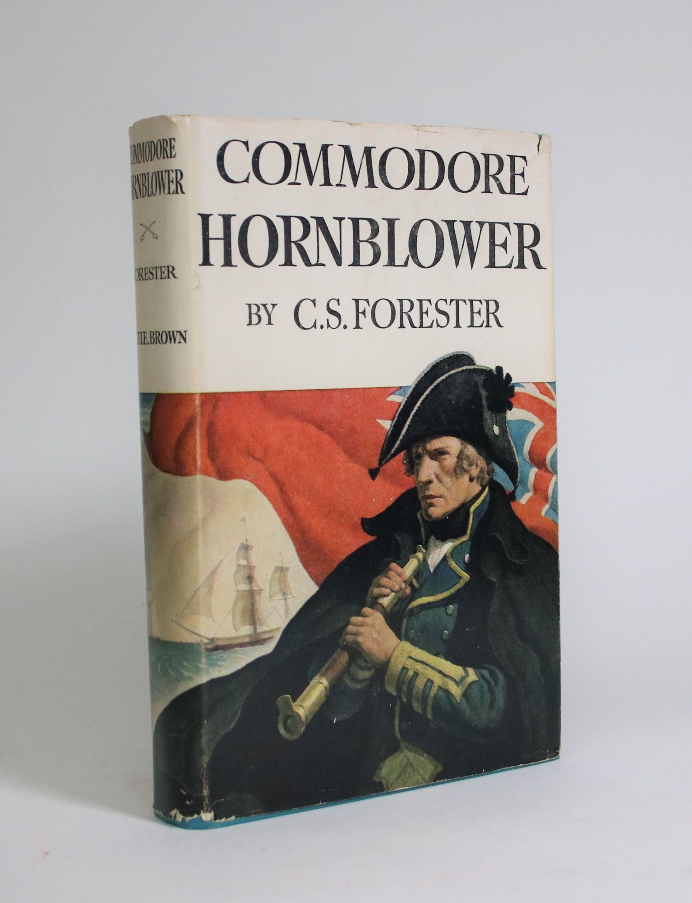
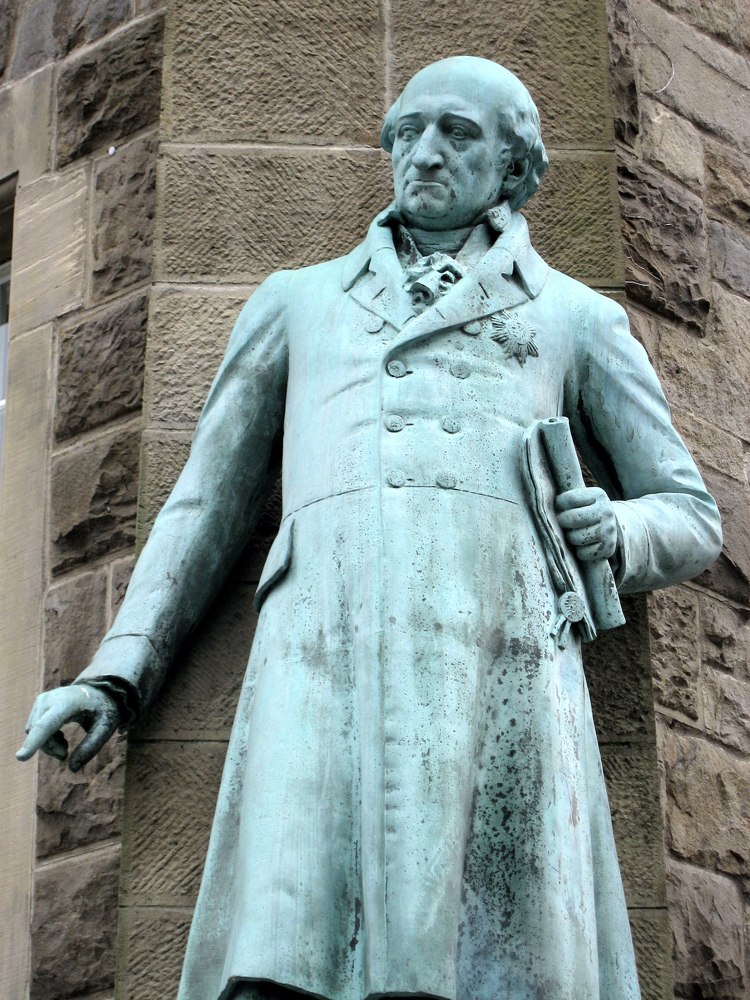
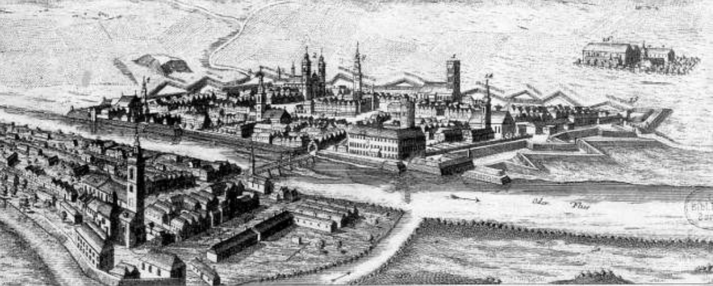
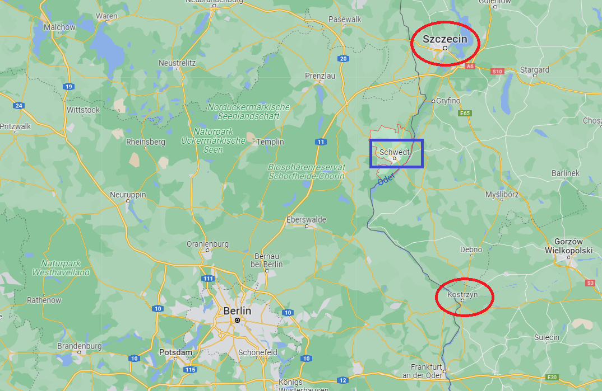

치욕의 프로이센 - 프리드리히 빌헬름의 외줄타기
게시: 2022-03-21T06:30:30+09:00
1812년 말 그랑 다르메의 일원으로 리가(Riga) 방면에서 러시아군과 대치 중이던 요크 대공이 본국과의 협의 없이 일방적으로 러시아군과 강화 조약을 맺을 때만 해도, 프로이센이 정말 1813년 러시아 편에 붙어 나폴레옹에 대적한다는 것이 확실한 것은 아니었습니다. 물론 프로이센 전체는 반(反)프랑스 정서로 들끓고 있었고 나폴레옹에 저항하여 들고 일어날 이유야 충분했습니다. 그러나 그렇게 기분만으로 반(反)나폴레옹 전선에 뛰어들 것이라면 훨씬 이전에 그랬어야 했습니다.

(C.S. Forester의 명작 소설인 Hornblower 시리즈 중 'The Commodore' 편에서는 혼블로워가 소함대의 제독으로서 발트 해에서 활약하며 짜르 알렉산드르를 만나기도 하고 리가(Riga)를 포위 공격하는 프랑스군과 포격전을 주고 받기도 합니다. 결국 혼블로워는 후퇴하는 프랑스군을 추격하는 러시아군과 함께 동행하는데, 이때 프로이센군 사령관 요크 대공을 만나 러시아와 영국 편에 서도록 설득하는 사람이 바로 혼블로워로 나옵니다. 세상 모든 일은 다 영국인을 빼면 돌아가지 않는다는 것이 영국인들의 시각입니다.) 흔히 1813년 봄, 나폴레옹의 형편이 러시아군에 비해 훨씬 열악한 편이라고들 생각하기 쉽습니다만 그렇지 않았습니다. 나폴레옹이 러시아 원정에서 약 40만을 상실했다고 하지만 그 중 프랑스군 피해는 약 25만 정도였고, 러시아군의 피해도 40만 정도에 달했습니다. 러시아도 프랑스 못지 않게 엄청난 피해를 입은 셈이고, 그래서 폴란드를 점령하고 수비대를 배치한 뒤 독일 땅까지 쳐들어올 수 있는 러시아 원정군의 수는 기껏해야 10만~15만 정도에 불과했습니다. 아무리 나폴레옹이 크게 한방 먹었다지만 프랑스는 쉽사리 20만 병력을 새로 동원할 수 있는 강대국이었고, 중부 유럽 국가들이 그런 나폴레옹에게 대항하기 위해 믿음이 가지 않는 러시아의 손을 잡는다는 것은 결코 쉬운 일이 아니었습니다. 실제로 1813년 봄, 결국 러시아와 손을 잡고 봉기한 것은 딱 한 나라, 프로이센 뿐이었습니다. 대체 프로이센은 왜 그런 모험을 택했을까요? 개인이든 국가이든 그 결정을 이해하려면 그 시점 한순간의 이해관계만 따져서는 충분치 않고, 반드시 지난 역사를 이해해야 합니다. 이제 애초에 왜 프로이센이 1812년 그토록 증오하던 나폴레옹의 깃발 아래서 원치 않는 러시아 원정을 떠나야 했는지를 잠깐 살펴보시겠습니다. 1806년 예나-아우어슈테트에서 박살이 난 뒤 맺은 1807년 7월의 틸지트 조약에서 프로이센은 그야말로 파탄이 났습니다. 영토가 거의 절반으로 줄었고, 원래 980만 정도였던 인구가 500만 이하로 떨어졌습니다. 감당할 수 없을 정도였던 1억4천만 프랑의 전쟁 배상금은 물론, 프로이센의 주요 요새들을 점거할 프랑스군의 주둔비용까지도 감당해야 했습니다. 뿐만 아니라 프로이센을 좌우에서 포위한, 사실상 프랑스의 위성국가였던 라인 연방과 바르샤바 공국을 잇는 도로를 프로이센 영토 내에 건설해주어야 했는데, 약 2억1천6백만 프랑이 들 것으로 예상되던 그 건설 비용까지도 프로이센이 부담해야 했습니다. 문제는 거기서 끝나지 않았습니다. 1808년 9월, 개혁파 프로이센 관료였던 슈타인(Heinrich Friedrich Karl vom und zum Stein)이 주영 프로이센 영사에게 보낸 문서가 프랑스 측에게 나포되었는데, 그 내용은 프로이센에서도 스페인처럼 국민적인 무장 저항을 일으켜야 한다는 것이었습니다. 당연히 보복이 뒤따랐습니다. 나폴레옹이 슈타인의 해임을 요구하여 관철시킨 것은 물론이었고, 사실상 일방적으로 통보된 것이나 다름없었던 1808년 9월 8일 파리 조약을 통해 1809년 1월부터 프로이센의 군대는 10년간 42,000을 넘지 못하는 것으로 제한되었습니다. 그 내용은 시시콜콜할 정도로 구체적인 편제와 인원수까지 명기될 정도였는데, 10개 보병 연대 22,000명, 8개 기병 연대 8,000명 (32개 기병 대대), 포병 및 공병 6,000명, 기타 근위대 6,000명으로 제한한다는 것이었고, 프로이센은 독립 주권국가가 아니라고 생각될 정도로 치욕적인 조약이었습니다.

(루르(Ruhr) 지역인 베터(Wetter) 시의 시청 앞에서 선 슈타인의 동상입니다. 그의 동상이 출생지도 아닌 이 곳에 들어선 이유는 그가 1784~1793년의 기간 동안 이 곳의 광산국 책임자로 일하면서 이 소도시의 자치정부를 사실상 창건했기 때문이라고 합니다. 그는 1814년 승전 이후 프로이센을 중심으로 하는 통일 독일을 꿈꾸었으나 오스트리아의 메테르니히에게 밀려 그 꿈을 접어야 했습니다. 한때 개혁의 동지였으나 이때 메테르니히에게 협조한 하르덴베르크와도 이 때의 반목을 계기로 사이가 틀어졌고, 그는 이후 은퇴하여 역사학자로서 조용히 살다 1831년 사망했습니다.) 일이 이렇게 되다보니 1810년 8월, 프로이센의 군대는 33,857명의 현역과 10,781명의 휴가병, 1,300명의 수비대, 그 외에 3,300의 부상병, 11,218명의 퇴역병이 전부였습니다. 이는 당시 프랑스 그랑 다르메의 1개 군단급에 해당하는 형편없는 규모였고, 이 정도라면 바로 인근에 배치된 다부(Davout)의 군단 하나로로 언제든지 프로이센을 격파할 수 있는 수준이었습니다. 이런 상황에서, 프로이센 국왕 프리드리히 빌헬름 3세가 느끼던 공포, 즉 나폴레옹이 스페인 부르봉 왕가처럼 프로이센의 호헨촐레른 왕가를 없애버릴 수도 있다는 공포는 실재적인 것이었습니다. 가뜩이나 심약한 군주였던 프리드리히 빌헬름은 이런 상황 속에서 과감한 결심을 하지 못하고 언제나 프랑스와 러시아 사이에서 눈치를 볼 수 밖에 없었습니다. 게다가 나폴레옹은 유난히 프로이센을 경멸하는 모습을 보여주었습니다. 원래 틸지트 조약에 따르면 전쟁 배상금의 절반을 지불 완료하면 오데르(Oder) 강변의 글로가우(Glogau, 폴란드어로 궈구프 Głogów) 요새는 프로이센 측에 반환되어야 했습니다. 그러나 조건이 충족되었는데도 불구하고 나폴레옹은 그냥 '프랑스에 필요한 요새'라는 이유로 반환을 거부했습니다. 정말 막무가내였습니다. 1811년 3월 오히려 오데르 강변의 주요 요새들에 대한 수비대를 보강하여 정원 1만을 훌쩍 초과하는 1만7천으로 늘렸습니다. 단치히 자유시에 주둔한 프랑스 수비대는 1만6천으로 증원했으며, 기타 프로이센 영토 내의 이런저런 요충지에도 프랑스군이 주둔했는데 그 수가 3만7천을 넘었습니다. 그리고 이런 모든 부대 이동은 프로이센 당국의 허가는 커녕 통보도 없이 일방적으로 이루어졌습니다. 그야말로 프로이센은 국가 취급을 받지 못했습니다.

(글로가우의 17세기 당시 모습입니다. 아마 나폴레옹 시대에도 크게 달라지진 않았을 것입니다. 글로가우는 폴란드에서 가장 오래도니 도시 중 하나로서, 10세기 무렵 방어요새로서 시작되었다고 합니다. 그 전략적 위치 때문에 보헤미아, 폴란드, 오스트리아, 프로이센 등의 통치를 번갈아가며 겪었습니다. 지금은 폴란드의 도시로서 인구 7만 정도입니다. 난공불락의 요새 글로가우는 1813년에도 9천의 프랑스 수비대가 지키고 있었으며, 포위 공격에도 끝내 버티다가 결국 1814년 4월 10일에야 항복했는데, 그때는 수비대가 1천8백으로 줄어있었습니다.) 그렇게 국가 존립 자체를 위협받고 있었기 때문에, 온갖 제약 속에서도 프리드리히 빌헬름 3세는 더욱 국방력 강화에 힘을 쓸 수 밖에 없었습니다. 그는 찢어지게 가난한 살림에도 불구하고 스판다우(Spandau)와 콜베르그(Kolberg), 필라우(Pillau) 등지에 참호로 보호된 병영을 건설하여 유사시 프랑스군에 저항할 근거지를 만들었습니다. 특히 슈비트(Schwedt)에는 오데르(Oder) 강을 건널 수 있는 견고한 다리를 건설했는데, 이는 유사시 호헨졸레른 왕가가 베를린을 탈출하여 러시아 쪽으로 가기 위한 조치였습니다. 프로이센이 아무리 후진국이라고 하더라도 오데르 강에 이미 건설된 견고한 다리가 없었을 리가 없습니다. 그런데 왜 이런 다리를 새로 만들었을까요? 오데르 강변의 주요 건널목에는 당연히 도시가 있었는데, 그런 곳의 요새는 모조리 프랑스군이 주둔하여 출입을 통제하고 있었기 때문이었습니다. 슈비트 다리의 위치를 보면 정말 눈물이 나는데, 슈비트는 오데르 강변의 프랑스군 점거 요새인 슈테틴(Stettin, 폴란드어로 슈체친 Szczecin)과 퀴스트린(Küstrin, 폴란드어로 코스트친 Kostrzyn)의 딱 중간에 위치한 작은 마을이었습니다.

(슈비트는 지금도 워낙 작은 동네라서 지도에도 잘 보이지 않습니다. 이 마을에 든든한 다리를 놓은 것은 딱 하나, 프랑스군의 요새들로부터 최대한 떨어진 곳이기 때문이었습니다. 가운데 파란색 사각형이 슈비트, 그 아래 위의 붉은 원이 각각 슈테틴과 퀴스트린입니다.) 그리고 엄격한 인원수 통제를 받고 있던 군병력 증강을 위해서도 온갖 꼼수를 동원했습니다. 프로이센은 나폴레옹이 부과한 제한을 회피하기 위해 크륌퍼(Krümper) 제도라는 것을 도입했습니다. 크륌퍼라는 것은 원래 방직공 중의 한 종류를 가리키는 말이라고 합니다만, 프리드리히 대왕 시절부터 프로이센에서는 막 징집된 신병을 가리키는 말이었습니다. 샤른호스트와 그나이제나우 등의 군개혁가들은 각 중대마다 3~5명씩을 1달간 휴가를 주어 내보내고, 그 자리에 신병을 들여와 그 기간 동안 훈련을 시킨 뒤 제대를 시키는 방법으로 유사시 훈련된 병력을 쉽게 확보할 수 있도록 했습니다. 이를 통해 1813년에는 기본 훈련을 마친 잠재적 예비군을 35,600명 확보할 수 있었습니다. 이렇게 눈치를 보며 국방력을 강화하던 프로이센에게 국제 상황은 점점 악화되고 있었습니다. 프로이센은 프랑스와 러시아 사이에 낀 나라였는데, 1811년 그 두 대국 사이에서 곧 전쟁이 벌어질 판이 된 것입니다. 프로이센은 곧 나폴레옹과 알렉산드르 두 황제 사이에서 선택을 해야만 하는 입장이 되었습니다. 처음에는 철천지 원수인 나폴레옹에 대한 복수심에서라도 프리드리히 빌헬름은 러시아와 손을 잡으려 노력했습니다. 그러면서 나폴레옹 몰래 병력을 늘리고 각지의 요새들을 수리했지요. 하지만 군비 증강은 쉽지 않았습니다. 1811년 10월, 영국 측과 몰래 군사 협력을 논의하고 있던 그나이제나우의 편지는 프로이센이 당면한 문제를 적나라하게 보여줍니다. 그나이제나우는 이 편지에서 단시간에 30만까지도 병력을 늘일 수 있으나, 머스켓 소총과 탄약은 12만4천 명 분량 밖에 없다고 호소하고 있습니다. 이 편지에 대한 호응으로 영국은 이미 9월에 1만 정, 추가로 2만5천 정의 머스켓과 그에 따른 탄약, 그리고 20문의 야포와 5문의 요새포를 실어보낸 바가 있었으나, 거기에 대해 추가로 2만5천의 머스켓과 20문의 야포, 25문의 요새포를 보내주겠다고 약속했습니다. 그러나 결국 9월에 선적된 것 포함하여, 대부분의 무기들은 끝내 프로이센 측에게 전달되지 못했습니다. 게다가 그런 행동들은 곧 프랑스에게 포착되어 프랑스 관리가 직접 프로이센군의 요새와 병영을 순찰하며 관리감독을 하는 상황이 되어 버렸습니다. 상황이 워낙 안 좋다보니 프로이센과 비밀리에 내통을 하던 영국이 구원의 손길을 내밀기도 했습니다. 영국은 이미 1805년 나폴리 왕국의 부르봉 왕가를 나폴리에서 시실리로, 또 1807년 포르투갈의 브라간자 왕가를 리스본에서 브라질로 구출해준 전력이 있었습니다. 실제로 영국은 1811년 9월, 오도가도 못하는 신세인 프리드리히 빌헬름에게 프로이센군이 지키고 있던 요새 항구인 콜베르그(Kolberg, 폴란드어로 코워브젝 Kołobrzeg)에서 영국 군함을 통해 탈출시켜주겠다고 제안을 할 정도였습니다. 나폴레옹 편에 붙을 것인지 알렉산드르 편에 붙을 것인지 갈팡질팡하던 프리드리히 빌헬름이 그 결정을 도저히 더 미룰 수 없을 지경으로 압력을 받던 1811년 말, 그는 결국 나폴레옹을 선택했습니다. 하르덴베르크(Karl August von Hardenberg) 등 그의 주요 관료들은 모두 알렉산드르 편에 붙기를 권고했으나 그가 그런 결정을 내린 것은 왕실 고문이자 역사학자이던 안실리온(Friedrich Ancillon)의 권고가 큰 역할을 했습니다. 대체 이 사람은 어떤 사람이었고 무슨 소리를 했던 것일까요? Source : The Life of Napoleon Bonaparte, by William Milligan Sloane Napoleon and the Struggle for Germany, by Leggiere, Michael V
https://en.wikipedia.org/wiki/G%C5%82og%C3%B3w https://en.wikipedia.org/wiki/Heinrich_Friedrich_Karl_vom_und_zum_Stein